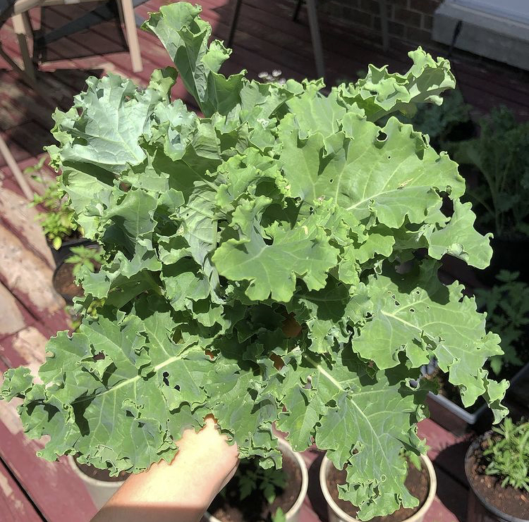
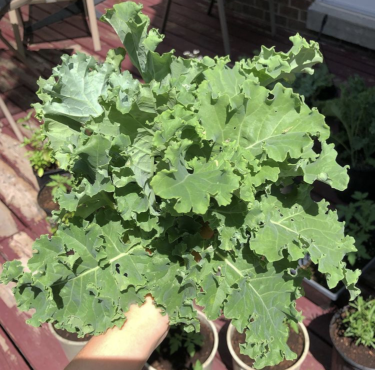

What initially was buying a few vegetable seedlings from the supermarket in June turned into renting a U-Haul to transport over 50 plants in September. I never really planned on gardening at all - but it's brought me a lot of joy in the last few months to literally enjoy the fruits of my labour.


 

 Back to top
Back to top